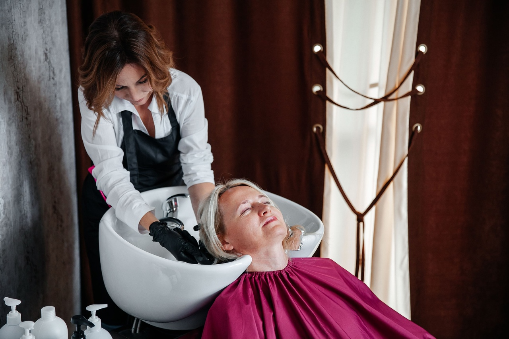

История Елены Степашовой-Котельниковой, парикмахера из пгт Шексна, Вологодской области.
Лена ушла в декрет, выучилась на парикмахера и с помощью продвижения в вк начала зарабатывать от 50 тысяч в месяц в небольшом поселке.
Мы взяли у нее короткое интервью:
— Расскажи, что было до курса, какой средний доход был в месяц? Сколько клиентов?
— В общем, у меня не было ни клиентов, ни заработка, когда я начинала. Я делала это грубо в параллели, ушла с основной работы в декрет, отучилась на парикмахера. И когда была условно готова выйти на работу, я уже продвигалась с помощью обучения на курсе.
Сейчас прошел почти год, наверное. Сейчас у меня есть программа по учету клиентов. В базе примерно сто человек, которых наработала, они не все постоянные. Это те люди, которые вообще были. Ещё раз повторю, что произошло только на этапе оформления личной страницы.
И, так как я ещё в декрете, у меня ребенок еще маленький, то времени не настолько много. Поэтому мне этих сто человек просто выше крыши)
Не успеваю снова сесть за группу, особо некогда, потому что все свободное время от работы я провожу, понятно, с ребенком. Все, что у меня свободно от ребенка, например, когда есть с кем его оставить, я провожу на работе.
Думаю, всё будет, как только месяц спокойный на клиентов будет, то и до группы, я конечно, доберусь.

Потому что, естественно, это надо. Чтобы всё красиво. Всё структурно. Все вот эти вещи, товары, ценники, услуги. В общем, вот это все, конечно, нравится. Надо до этого добраться обязательно.
— Какие сложности были во время обучения на нашем курсе? Насколько сложно было учиться?
— Учиться было несложно. Все настолько разжевано, что невозможно к каким-то сложностям скатываться. Что дальше будет — таргет, реклама, еще что-то. Это мне непонятно, но я понимаю, что дойду. Все постепенно, по логической цепочке, разберусь) В тех уроках, которые я прошла, всё очень доступно, логично изложено, поэтому сложности не было абсолютно.
— Какие сейчас действия делаешь для привлечения клиентов? Как часто пишешь посты? Или просто хватает той базы, что уже сформировалась?
— Пишу посты достаточно регулярно.. Особенно, если есть новые интересные работы. Или про учёбу свою.. В общем, про работу))
Базу, думаю, надо ещё наращивать.. Чтоб потом иметь возможность поднимать цены.
— Да, все правильно, думаешь) Над базой нужно постоянно работать. Сколько сейчас зарабатываешь? Как за год динамика изменилась?
— Заработок у меня сейчас максимальный за весь период времени)
Понятно, что тут все волнами и наплывами, тем более, я еще живу в небольшом поселке, то есть это не город, и у нас поселок такой как бы специфический) У всех огороды, вот эти все дачные дела. Поэтому осень, когда убирают урожай - по клиентам тишина. Весна, когда сажают — тоже затишье.
В самый активный месяц, по-моему июль, у меня был заработок 80 тысяч рублей. Для нашего поселка это был прямо вот очень хороший заработок. А самый маленький, наверное, был тысяч 30. Но это вообще, когда я уезжала, была в отпуске, работала две недели и то не каждый день. Поэтому если брать средний, то я думаю, тысяч пятьдесят, выходит.
— Что можешь сказать тем, кто сомневается и думает покупать или не покупать курс?
— Надо однозначно! Пусть не сомневаются! Инструмент рабочий! Тем более для тех, кому странички заводят дети, как мне когда-то))) Всё настолько разжевано в уроках, осталось только проглотить и получать выгоду!!
— Спасибо большое за общение!!)